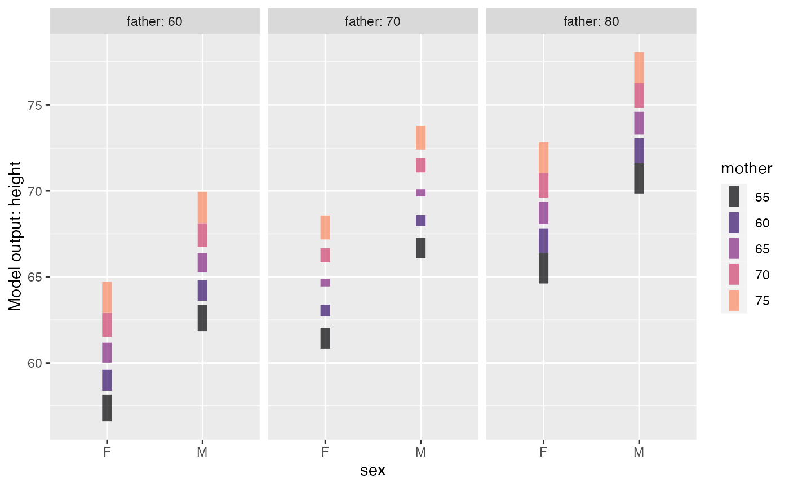
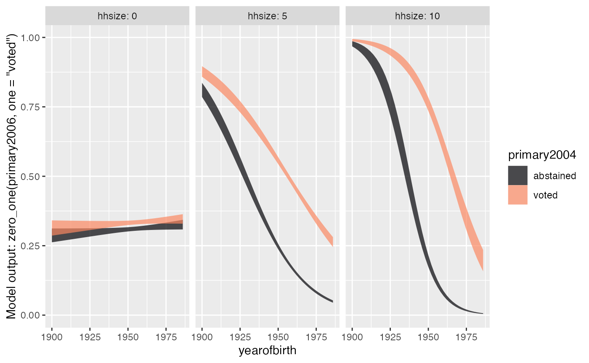

To “train a model” involves three components:
- A data frame with training data
- A model specification naming the response variable and the
explanatory variables. This is formatted in the same tilde-expression
manner as for
lm()andglm(). - A model-fitting function that puts (1) and (2) together into a
model object. Examples of model-fitting functions are
lm()andglm(). In Lessons in Statistical Thinking and the corresponding{LST}package, we almost always usemodel_train()
Once the model object has been constructed, you can plot the model, create summaries such as regression reports or ANOVA reports, and evaluate the model for new inputs, etc.
Using model_train()
model_train() is a wrapper around some commonly used
model-fitting functions from the {stats} package,
particularly lm() and glm(). It’s worth
explaining motivation for introducing a new model-fitting function.
-
model_train()is pipeline ready. Example:Galton |> model_train(height ~ mother) -
model_train()has internal logic to figure out automatically which type of model (e.g. linear, binomial, poisson) to fit. (You can also specify this with thefamily=argument.) The automatic nature ofmodel_train()means, e.g., you can use it with neophyte students for logistic regression without having to introduce a new function. -
model_train()saves a copy of the training data as an attribute of the model object being produced. This is helpful in plotting the model, cross-validation, etc., particularly when the model specification involves nonlinear explanatory terms (e.g.,splines::ns(mother, 3))
Using a model object
As examples, consider these two models:
- modeling
heightof a (fully grown) child with thesexof the child, and themother’s andfather’s height. Linear regression is an appropriate technique here.
height_model <- mosaicData::Galton |> model_train(height ~ sex + mother + father)- modeling the probability that a voter will vote in an election
(
primary2006) given the household size (hhsize),yearofbirthand whether the voter voted in a previous primary election (primary2004). Since having voted is a yes or no proposition, logistic regression is an appropriate technique.
vote_model <-
Go_vote |>
model_train(zero_one(primary2006, one = "voted") ~ yearofbirth * primary2004 * hhsize * yearofbirth )Note that the zero_one() marks the response variable as
a candidate for logistic regression.
The output of model_train() is in the format of
whichever {stats} package function has been used,
e.g. lm() or glm(). (The training data is
stored as an “attribute,” meaning that it is invisible.) Consequently,
you can use the model object as an input to whatever model-plotting or
summarizing function you like.
In Lessons in Statistical Thinking we use {LST}
functions for plotting and summarizing:
model_plot()R2()conf_interval()- Late in Lessons,
regression_summary()andanova_summary()
Let’s apply some of these to the modeling examples introduced above.
height_model |> model_plot()
height_model |> conf_interval()
#> # A tibble: 4 × 4
#> term .lwr .coef .upr
#> <chr> <dbl> <dbl> <dbl>
#> 1 (Intercept) 9.95 15.3 20.7
#> 2 sexM 4.94 5.23 5.51
#> 3 mother 0.260 0.321 0.383
#> 4 father 0.349 0.406 0.463
vote_model |> model_plot()
vote_model |> R2()
#> n k Rsquared F adjR2 p df.num df.denom
#> 1 305866 7 0.03799898 1725.91 0.03797696 0 7 305858The model_eval() function from this package allows you
to provide inputs and receive the model output, with a prediction
interval by default. (For logistic regression, only a confidence
interval is available.)
vote_model |> model_eval(yearofbirth=c(1960, 1980), primary2004="voted", hhsize=4)
#> Warning in model_eval(vote_model, yearofbirth = c(1960, 1980), primary2004 =
#> "voted", : No prediction interval available. Using confidence interval.
#> yearofbirth primary2004 hhsize .lwr .output .upr
#> 1 1960 voted 4 0.4344150 0.4418285 0.4492680
#> 2 1980 voted 4 0.3016314 0.3128150 0.3242207